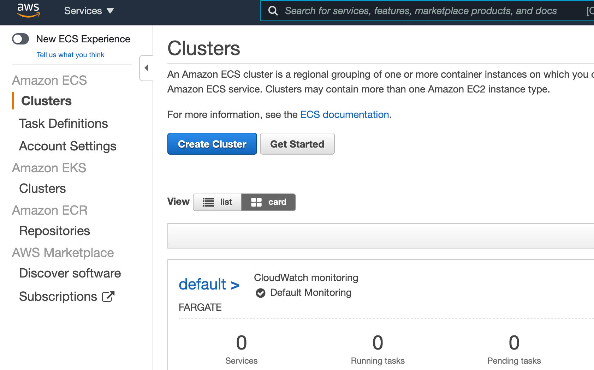
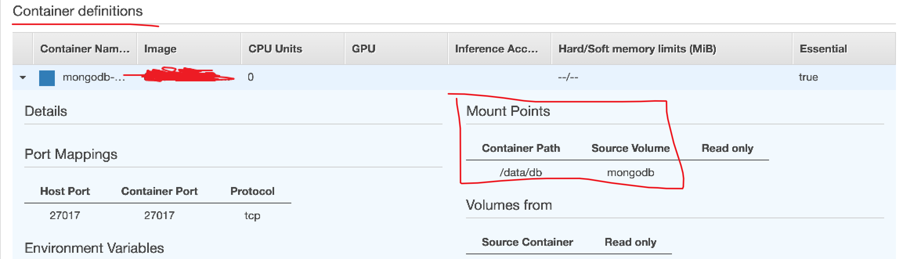
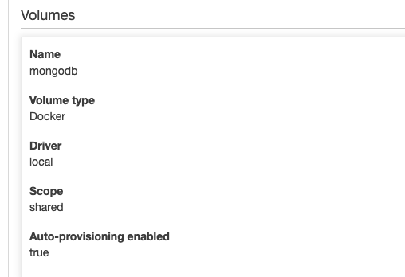
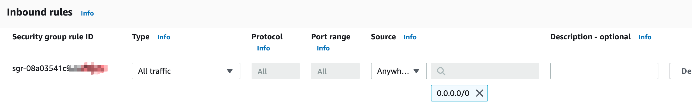

Overall Procedures
Assume already setup AWS Cli
- Build image to AWS ECR.
- Create Task Definitions in ECS that bind to images.
- Create Cluster with service that uses the task definition.
- Access to EC2 instance.
Build Image to AWS ECR
- Search ECR in AWS services.
- Create a repository.
- Go inside the repository.
- Click
View push commandon the top right. (Need to set up AWS Cli).
Create Task Definitions
Dockerfile
EXPOSE <PORT>if not use default.Create task definition under ECS clusters.

If no mention, leave as default
Network mode
default.Requires compatibilities
EC2.Task size: must be (much) less than cluster EC2 instance size since the install itself also uses some memories (can just set this and don’t need to set the memory size under container definition).
Container definition: memory (hard/soft) must be less than or equal to the task size, cpu/gpu leave blank (for EC2, can just specify this and not specify the task size but the container memory (hard/sorft) should also much less than the cluster instance memory). Under the Storage and Logging, check the “Log configuration” in order to see the log later in CloudWatch -> Logs Group/Insight.
Port mapping: host (EC2 instance) to container.
Attach volume, choose volume type as “Docker”, choose “shared” scope (so that it can be persistence) then check “Enable auto-provisioning”. With this, need to set the “Mount Point” inside the “Container Definition”. An example:


Creating Cluster
Cluster template: EC2 Linux + Networking.
Choose instance type, choose number of instances (be careful not to choose the ARM architecture).
Create a key pair (can be found under Network & Security on the left menu in EC2 service).
To ssh to EC2 instance, needed to give a key pair when creating the cluster. If lost, may need to recreate the cluster (couldn’t change the key).
https://docs.aws.amazon.com/AWSEC2/latest/UserGuide/ec2-key-pairs.html
If you’ve lost your existing private key or you launched your instance without a key pair, you won’t be able connect to your instance and therefore won’t be able to add or replace a key pair.Networking: VPC chooses the one has (172.,,,,), then subnet choose the first one.
Create a security group (search security group in the search bar) and open ports, then choose that security group while creating the cluster.
I set to open all ports for testing (Convenience).

Run ECR Container on Cluster
Service is the long-run of task definition. When a task down, service will start that task again to ensure the service always running. For running a docker image on ECS, a task (definition) needs to be created. You can just run a task from the task definition but if it’s down, it’s down (won’t restart itself). With service, a task (definition) is bound to a service. When a cluster specified a service, it will ensure the service always running, ie. the task in the service is always running (will restart if it goes down).
Create service.
- Launch type EC2.
- Choose task definition.
- Choose cluster.
- Service name.
- Service type: Daemon (run one copy).
- Other leave as default.
Access EC2 Instance
Note: The public IP is found under the ec2 instance (search ec2 in the search bar, click on instance id, then the public IPV4 is the address), not the task ip address in the cluster page
- Search EC2.
- Go to Instance under instances.
- Choose the instance and click “Connect”.
- Use SSH Client to connect.
To access container (task), use docker command in EC2. Same as using docker on your local machine.